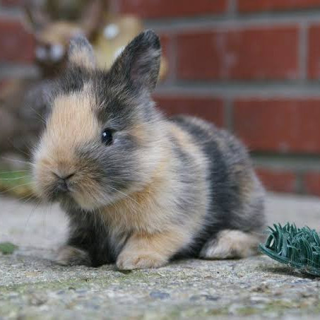
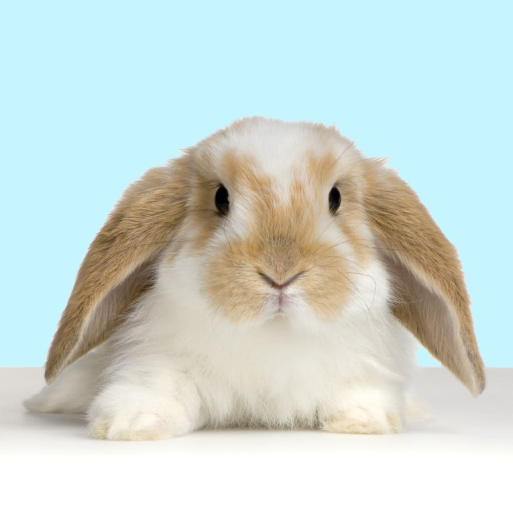
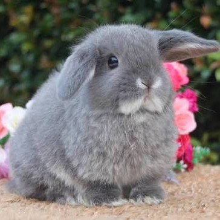
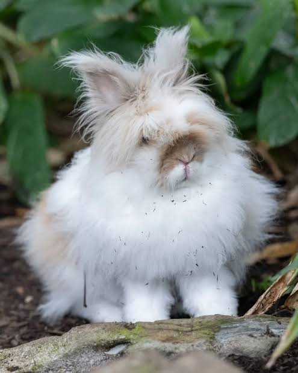
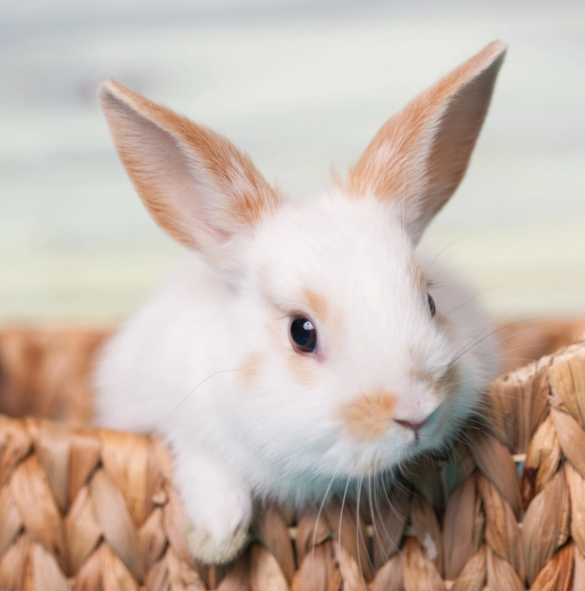
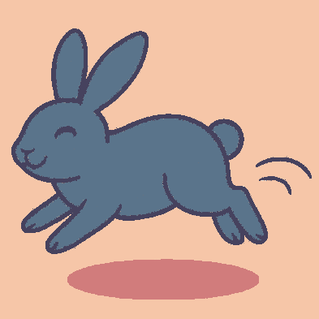
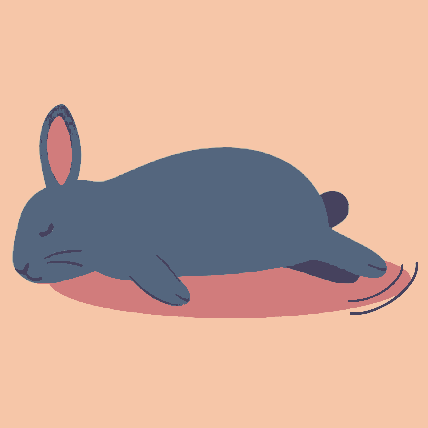

We Rate Rabbits!
Our featured bunnies






Bunny facts of the week
Did you know?
When a rabbit is super happy, they do a joyful twist-and-kick jump in the air called a binky!

Happy rabbits make a soft purring sound by gently grinding or rubbing their teeth together

Originally native to the Iberian Peninsula and southwestern France, they were spread across Europe by the Romans and later the Normans, and they represent the sole ancestor of all domestic rabbit breeds

By IUCN Red List of Threatened Species, species assessors and the authors of the spatial data., CC BY-SA 3.0, Link